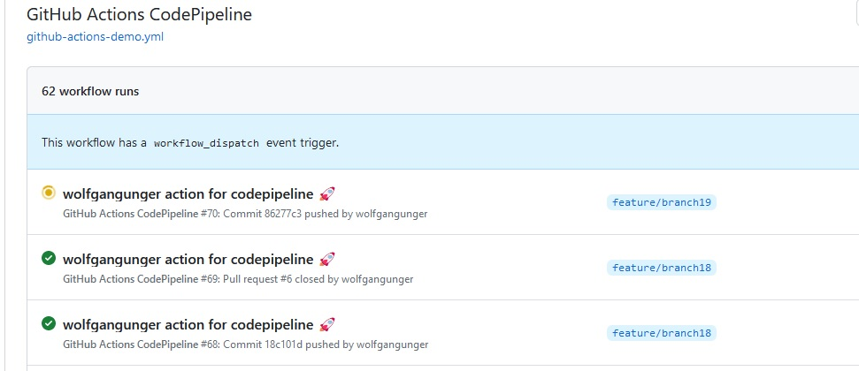
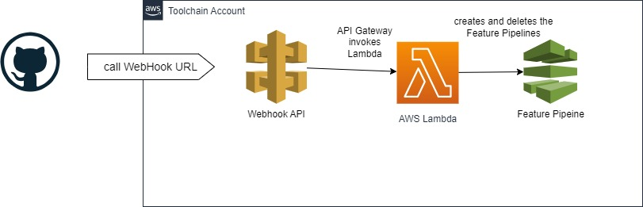
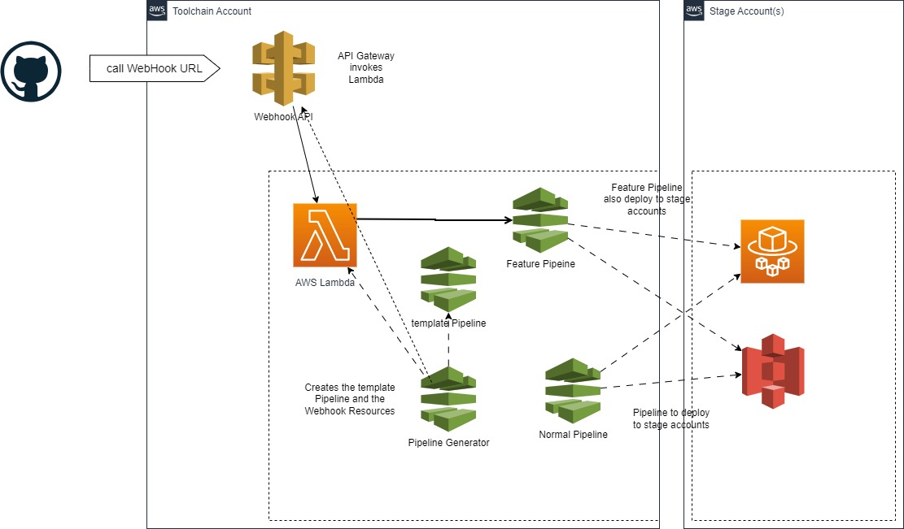
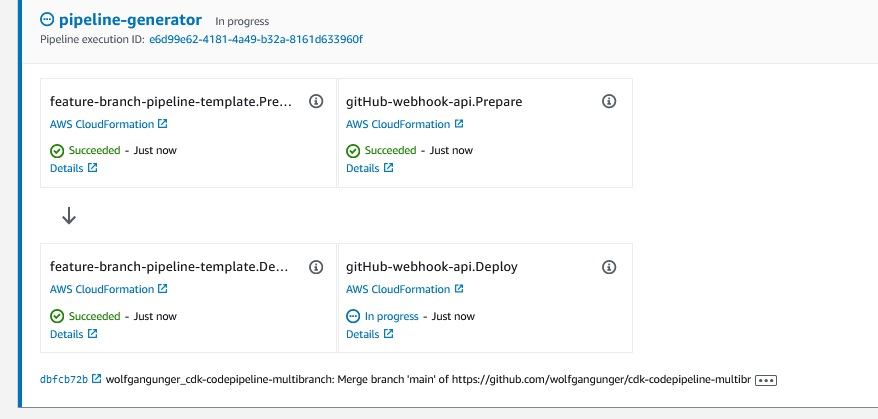
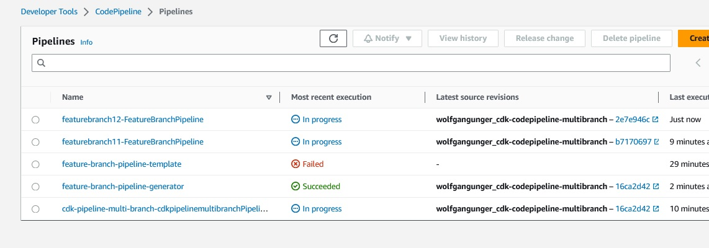

SCC
Brasil
os cloud gurus
Software Cloud Consulting
Your software development, cloud, consulting & shoring company
How to setup a Multi Branch Pipeline with CDK and CodePipeline

By Wolfgang Unger
Introduction
Maybe your are already using AWS CodePipeline to deploy your CDK Code and infrastructure
to your Stage Accounts.
I have a HowTo and Example Github Project about how to do so in this blog:
CDK CodePipeline
This works fine, but only on your main/master branch.
There is no build in functionality with CodePipeline that supports building mulitple feature
branches.
For small companies and projects this is ok, but if you work on a bigger projects with lets say
20 developers
working on the CDK and infrastructure, 3-5 open feature branches the same time, you will miss
this feature.
You want to test your feature branches before merging them back into the main branch.
If have implemented a multi feature branch pipeline, it is available in my github account.
Github Wolfgang Unger
In this blog I will explain the project, since it is a little challenge to set this up with
CodePipeline.
Lets first identify the challenge.
Normally you build a pipeline with a static branch name.
Like main or for example development. These names don't change, so once you have setup your
pipeline, everything works fine.
If you want to build your feature branches in your Pipeline, you have to create a new
Pipeline so moment the first push was done at the new feature branch and you want
to delete this new pipeline once the PR for the branch was merged or closed.
There might be n feature branches active at one point of time.
This is not quite easy to setup, therefor let's take a closer look on the details.
Obviously we will need to trigger a pipeline creation or destruction on our Git actions.
My example is setup in Github, so I use Github actions for this.
Github Actions
You can setup a yaml file in your git project to define these actions, this file is included in my repo.I am using this webhook action to call my API Gateway on AWS:
- name: Webhook
uses: distributhor/workflow-webhook@v3
env:
# edit the url for your api gateway stage url or custom domain
webhook_url:
"https://xxxxxxxxxx.execute-api.eu-west-1.amazonaws.com/prod/webhook"
data: '{ "repository": "${{github.event.repository.full_name}}", "ref":
"${{github.ref_name}}","ref_head": "${{github.head_ref}}", "ref_type": "branch", "description": "${{
github.event.head_commit.message }}" }'
I am triggering these actions on Push events for branches with a defined nameing "^(feature|bug|hotfix))" and also on the close PR action.
The first action will create the feature branch if it does not yet exist, the second action will delete it.
A Systems Manager Parameter will be created to detect already created feature pipelines.
The second action occurs on merging and closing a PR.
It is up to you to define the github actions on your requirements.
Maybe you want to create the feature pipeline only when a PR is created.
Please adapt the github actions yaml for your needs, my action triggers are currentyl defined like this:
on:
workflow_dispatch:
push:
branches:
- 'feature/**'
- 'bug/**'
- 'hotfix/**'
pull_request:
types: [closed]
delete:
Once your github actions are setup, you will see the actions in your github repo in the actons
tab:
Please check the actions and the logs, no errors occurs in the execution.
You can also check the Lambda Logs for problems
The github action is using a webhook_url action to call an API I have to provide in my Toolchain Account where my CodePipeline is hosted.

Feature Pipeline Architecture
Behind my API Gateway is a Lambda Function that either creates or deletes a Feature Branch. To not code a super complex method to create the pipeline, I am using insted an existing pipeline template. The Lambda created the Feature Pipeline based on this template, therefor the Lambda Code itself is simple.To create the template Feature Pipeline ( could be various different ones, a faster pipeline that just does unit tests for example) I use a Pipeline Generater CodePipeline.
You have to deploy this Pipeline Generater CodePipeline also like the normal Pipeline at the very beginning.
Lets have a look on a more complete architecture diagram to understand the architecture:

A Pipeline Generator Pipeline is preparing Pipeline Templates which the Lambda will use to create a new Feature pipeline
There is a API Gateway for the Webhooks from Github Actions.
It invokes a Lambda funcion that will either create or delete a Feature Branch Pipeline.
For each Feature Branch ( or Pull Request, if you adapt the github actions) a new Pipeline will be created.
If you close the Pull Request, the Lambda will delete this Feature Pipeline.
Setup
Please follow the Readme to setup the github project on your accounts.You have to adapt a couple of file to get it running.
-github-actions-demo.yml (to be edited with your hook url)
-cdk.json (account numbers and codestar connection, branch names)
-CDk Stacks of course, it is just a sample project to deploy some resources
You also have to setup a codestar connection in AWS Toolchain Account and on your
Github account you should install in applications the AWS Connector for GitHub to send notifications
on git events ( this is not for creating branches, just for triggering the pipelines)
After bootstrapping the project and deploy the cross account roles you will first have to install the normal pipeline with:
cdk deploy cdk-pipeline-multi-branch
As next step you must deploy the Pipeline-Generator Pipeline with : cdk deploy feature-branch-pipeline-generator
This will create a second Pipeline the "Pipeline-Generator Pipeline" which will create a 3rd Pipeline which serves as a template for the feature Pipelines.
This Pipeline deploys these recources, the Webhook API and Lambda and the Feature Pipeline Template :

Feel free to adapt this Feature Pipleline for your needs.
In my example it is the same as the normal pipeline, but maybe you want to remove or add some actions.
You can define multiple Feature Pipeline Templates, that's why I use a Generator Pipeline.
After this you must edit the created secret.
Once you have created the API Gateway by the Pipeline-Generator Pipeline, adapt the webhook_url in the github actions yaml.
Push your changes to the master account, once the normal pipeline builds without errors, you can create a branch an push a small change to this feature branch.
Naming must be feature/branchname ( or hotfix/ or bug/)
This push will now create your feature pipeline and this should look like this:

In my image are 5 pipelines:
1 The normal CDK pipeline
2 The feature Branch Pipeline Generator Pipeline
3 Feature Branch Pipeline Template ( this will not build successfully, since the branch is not set)
4 & 5 Two Feature Pipelines created with Github Actions as Clone from the Feature Branch Pipeline Template
Conclusion
With this approach you can deploy or test from Feature Branches or Pull Requests with CodePipeline.You need a good python and CDK knowledge to adapt my github projects for your requirements. You might want to change the trigger behaviour, in this case you need to change the github actions yaml.
Also you might want to adapt the Feature Pipeline itself.
I am using my original Pipeline with all actions, I am doing this with a Python superclass for both Pipelines.
But you might want to setup a faster Pipelines for Branches or Pull Requests.
Maybe you don't want to deploy but just execute unit tests.
This is up to you, you can change the Feature Pipeline for your needs. In this case, overwrite the methods of the Pipeline Superclass or implement a different class.
You can also create multiple types of Feature Branches, that's why I have introcuced the Pipeline Generator.
Think of a complete, a fast development or test-only Pipeline.
Currently the Feature Pipeline deploys to the same stage ( first dev) as my normal Pipeline.
Thus it will overwrite resources on Dev. If you want to introcuce a different stage for the feature pipeline deployments, please implement this in the Feature Pipeline .
Another improvement could be to implement a mechanism to avoid parallel execution of multiple feature Pipelines.
There is still a lot of space for improvements and new features.
Please have fun with the pipeline and adapt and improve for your needs.
Autor

Wolfgang Unger
AWS Architect & Developer
6 x AWS Certified
1 x Azure Certified
A Cloud Guru Instructor
Certified Oracle JEE Architect
Certified Scrum Master
Certified Java Programmer
Passionate surfer & guitar player